기상기사 (2018-08-19 기출문제)
1과목: 기상관측법
1. 일정한 위치에서 발생한 번개가 3개 이상의 센서에 도달한 시간을 이용하여 낙뢰의 발생위치를 결정하는 관측방식은?
- TOA(Time of Arrival)방식
- MDF(Magnetic Direction Finding)방식
- LTS(Lighting Tracking System)방식
- LLP(Lighting Location Processing)방식
(정답률: 69%)

2. 다음 위성 중에서 극궤도 위성이 아닌 것은?
- 천리안
- Terra/Aqua
- NOAA-Series
- COMPSAT-2
(정답률: 71%)
3. 기상관측소 설치 시의 고려사항 중 잘못된 것은?
- 관측소는 정사각형이나 원형으로 설치한다.
- 관측된 기상요소는 관측소 부근의 일반적인 기상상태를 대표해야 한다.
- 관측소는 바람의 유통이 잘되고 시야가 넓은 곳에 위치하여야 한다.
- 관측소의 중심에서 건물이나 나무 등 장애물까지의 거리는 관측탑 높이의 3배 이상 떨어져 있는 것이 이상적이다.
(정답률: 68%)
4. 우박이나 뇌위에 의해 생기는 에코는?
- 엔젤 에코
- 층상 에코
- 파랑 에코
- 대류성 에코
(정답률: 68%)
5. 다음 구름 중 상층운이 아닌 것은?
- 권운(Ci)
- 고층운(As)
- 권적운(Cc)
- 권층운(Cs)
(정답률: 73%)
6. 수평시정이 방향별로 다른 경우 국제기상전보식에서 보고되는 시정값은?
- 최장시정
- 최단시정
- 평균시정
- 최장시정과 최장시정
(정답률: 67%)
7. 다음은 일조시간의 정의이다. ( )안에 들어갈 내용이 바르게 연결된 것은?
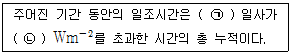
- ㉠ : 산란, ㉡ : 20
- ㉠ : 직달, ㉡ : 120
- ㉠ : 전천, ㉡ : 220
- ㉠ : 순복사, ㉡ : 320
(정답률: 70%)
8. 기압의 보정순서로 가장 적합한 것은?
- 기차보정 → 온도보정 → 해면경정 → 중력보정
- 기차보정 → 온도보정 → 중력보정 → 해면경정
- 온도보정 → 기차보정 → 해면경정 → 중력보정
- 온도보정 → 기차보정 → 중력보정 → 해면경정
(정답률: 80%)
9. 레윈존데 기상관측장비를 이루는 구성품이 아닌 것은?
- 기온센서
- 습도센서
- 풍속센서
- 기구(풍선)
(정답률: 58%)
10. 열대폭풍(Tropical Storm)으로 분류되는 풍속의 기준으로 가장 적합한 것은?
- 중심부근의 최대풍속이 34 knots 미만
- 중심부근의 최대풍속이 34 ~ 47 knots
- 중심부근의 최대풍속이 48 ~ 64 knots
- 중심부근의 최대풍속이 64 knots 이상
(정답률: 52%)
11. 적운(Cu)과 난적운(Cb)의 높이에 관한 설명으로 가장 적절한 것은?
- 전형적인 하층운이다.
- 수직발달이 심하기 때문에 편의상 중층에 속한다고 본다.
- 적운은 전형적인 하층운이지만 적란운은 특수고도를 갖는다.
- 구름의 밑은 일반적으로 하층에 속하나 정상은 중층 또는 상층까지 발달한다.
(정답률: 66%)
12. 보통 정도의 단속적인 눈을 표시하는 기호는?
(정답률: 55%)
13. 기상레이더로 관측할 때 600Hz의 PRF를 사용하고 S밴드 레이더(파장 10cm)를 이용한다면 최대관측속도(m/s)는?
- 30
- 25
- 20
- 15
(정답률: 45%)
14. 세계기상기구(WMO)에서 지정한 레윈존데의 분당 상승속도로 적절한 것은?
- 분당 100 ~ 120m
- 분당 200 ~ 220m
- 분당 300 ~ 320m
- 분당 300 ~ 420m
(정답률: 57%)
15. 풍속 측정의 원리로 이용되지 않는 것은?
- 풍배의 회전
- 쌍금속(bimetal)
- 초음파(ultrasonic)
- 피토관(Pitot tube)
(정답률: 64%)
16. 시정에 관한 설명 중 틀린 것은?
- 시정은 대기의 혼탁정도를 표시하는 척도의 하나이다.
- 낮에 천공을 배경으로 목표물을 확인하 수 있는 최대거리이다.
- 시정목표물로는 지물을 배경으로 한 밝고 빛나는 색깔의 물체를 선택한다.
- 야간에는 야음(夜陰)과 관계없이 낮과 같은 밝기로 했다고 가정하여 시정을 결정한다.
(정답률: 75%)
17. 온도계에 관한 설명으로 틀린 것은?
- 최고 온도계 : 모세관내의 유리 지표를 이용하여 최고 온도를 측정한다.
- 철관지중 온도계 : 50cm 깊이 이상의 지중온도를 측정하는 온도계이다.
- 바이메탈 자기온도계 : 팽창률이 서로 다른 두 금속 물질이 변형되는 성질을 이용한다.
- 알코올 온도계 : 어는 점이 –114.5℃인 알코올을 이용하며, 추운 지방 또는 저온 측정에 널리 이용된다.
(정답률: 52%)
18. 전도형 우량계(tipping-bucket rain gauge)의 설명으로 틀린 것은?
- 많은 양의 강수를 측정할 때 오차가 커지는 단점이 있다.
- 전도형 우량계에는 일반형, 온수식, 일수식의 3종류가 있다.
- 사이펀 원리를 이용하여 저수형으로 측정하고 있다.
- 2개의 전도대로, 한쪽에 일정량의 물이 고이면 그 물의 무게로 전도대가 넘어지고 다른 쪽의 전도대가 교대로 측정하는 원리이다.
(정답률: 53%)
19. 뇌전현상(천둥, 번개) 관측 시 관측사항이 아닌 것은?
- 발생거리
- 이동방향
- 이동속도
- 현상강도
(정답률: 58%)
20. 극 궤도 기상위성인 NOAA 시리즈의 고도는 대략 몇 km 인가?
- 50
- 100
- 850
- 3600
(정답률: 69%)
2과목: 대기열역학
21. 다음 미분형식으로 표시된 물리량 중 엔트로피는? (단, CP는 정압비열, Cv는 정적비열, T는 절대온도, α는 비적, P는 기압, θ는 온위이다.)
- CpdT
- CvdT
- Cpdlnθ
- CpdT-αdP
(정답률: 58%)
22. 상공에서 구름이 발생하려면 공기의 냉각이 필요하다. 이러한 대기의 주된 냉각원인은?
- 단열압축
- 단열팽창
- 복사냉각
- 찬 공기와의 혼합
(정답률: 75%)
23. 다음 중 차원(dimension)이 있는 것은?
- 비습
- 혼합비
- 상대습도
- 절대습도
(정답률: 64%)
24. 다음 그림에서 가장 불안정한 대기상태는?
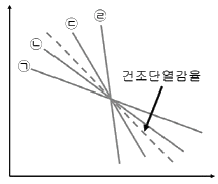
- ㉠
- ㉡
- ㉢
- ㉣
(정답률: 67%)
25. 어느 기체의 질량을 m, 분자량을 M, 비기체상수를 R, 보편기체상수를 R*이라 할 때, 이들 사이의 관계는?
- R* = mR
- R = mR*
- R* = MR
- R = MR*
(정답률: 50%)
26. 등밀대기(homogeneous atmosphere)의 높이(H)는 다음 중 어느 식으로 주어지는가? (단, ρ는 밀도, g는 중력가속도, P0는 해면기압이다.)
- H = ρgP0
- H = P0 / ρg
- H = ρg / P0
- H = ρP0 / g
(정답률: 62%)
27. 습윤단열선에 따라서 일정한 것은?
- 온위
- 수증기압
- 위습구온도
- 위습구온위
(정답률: 52%)
28. 얼음을 융해시키는데 필요한 융해열은?
- 약 2.25 × 104 Jkg-1
- 약 3.34 × 104 Jkg-1
- 약 2.25 × 105 Jkg-1
- 약 3.34 × 105 Jkg-1
(정답률: 35%)
29. 열역학선도에서 상층의 양의 면적(positive area)보다 하층의 음의 면적(negative area)이 넓은 경우는?
- 대류 불안정
- 잠재 불안정
- 위잠재 불안정
- 조건부 불안정
(정답률: 60%)
30. 화씨온도(°F)와 섭씨온도(℃)의 관계식은?
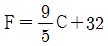
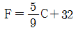
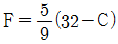
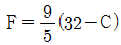
(정답률: 62%)
31. 닫힌 용기 안에 A, B, C 세 기체가 들어 있으며 각 기체의 의한 부분압은 각각 10hPa, 5hPa, 3hPa 일 때 세 기체의 총압은?
- 3 hPa
- 10 hPa
- 18 hPa
- 150 hPa
(정답률: 72%)
32. 불포화 공기에서 포화단열기온 감율(γs), 건조단열기온 감율(γd)와 대기의 기온감율(γ)을 비교할 때, γs ＜ γ ＜ γd 이면 어떤 상태인가?
- 안정
- 중립
- 불안정
- 절대 안정
(정답률: 43%)
33. 산소, 질소의 분자량은 각각 32, 28, 공기에 대한 산소의 질량비는 0.23, 질소의 질량비는 0.769 이다. 공기(겉보기)의 분자량은?
- 18.9
- 28.9
- 38.9
- 48.9
(정답률: 70%)
34. 수은 대신에 밀도가 1g/cm3 인 물을 이용해서 기압계를 만들었을 경우 기압이 1000 hPa 일 때 물기둥의 높이는? (단, 중력가속도는 980cm/sec2 이다.)
- 약 760 cm
- 약 980 cm
- 약 1020 cm
- 약 1076 cm
(정답률: 42%)
35. 습윤공기의 온도를 T, 혼합비를 x라 할 때, 가온도(vitual temperature) Tv를 구하는 공식은?
- Tv = (1 - 0.61x)T
- Tv = (1 + 0.61x)T
- Tv = (1.61x – 1)T
- Tv = 1.61xT + 1
(정답률: 50%)
36. 건조공기에서 기체상수 R, 정압비열 Cp, 정적비열 Cv 사이의 관계로 옳은 것은?
- R ＞ Cp ＞ Cv
- Cp ＞ Cv ＞ R
- Cv ＞ R ＞ Cp
- Cp ＞ R ＞ Cv
(정답률: 65%)
37. 등밀대기(homogeneous atmosphere)에서의 기온감율은? (단, 건조공기의 기체상수는 287 Jkg-1K-1, 정압비열은 10⑤ Jkg-1K-1 이다.)
- 건조단열감률보다 크다.
- 포화단열감률보다 작다.
- 고도에 따른 기온의 변화는 없다.
- 포화단열감률과 건조단열감률의 중간이다.
(정답률: 48%)
38. 온위(potential temperature)를 구하는 식으로 옳은 것은? (단, P와 T는 공기의 기압과 온도, k는 R/Cp이고, R은 기체상수, Cp는 정압비열이다.)
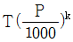
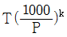
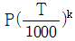
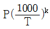
(정답률: 65%)
39. 15℃에서 2.5kg의 공기 중에 수증기가 50g 들어 있을 때, 이 공기의 비습은 얼마인가?
- 15 g/kg
- 20 g/kg
- 25 g/kg
- 30 g/kg
(정답률: 63%)
40. dθ를 상당온위(Equivalent potential temperature)의 미소변화, dZ를 고도의 미소변화라고 할 때
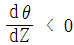
인 경우의 대기 안정도는?- 절대 안정
- 대류 불안정
- 잠재 불안정
- 조건부 안정
(정답률: 66%)
3과목: 대기운동학
41. 다음 중 토네이도의 바람을 가장 잘 나타낼 수 있는 것은?
- 지균풍
- 온도풍
- 경도풍
- 선형풍
(정답률: 64%)
42. 정적으로 안정되 대기에서 지표면과 1km 고도 사이의 연직 기압차가 100hPa일 때, 두층 사이의 평균대기밀도는? (단, 중력가속도는 10m/s2 로 가정한다.)
- 1 g/cm3
- 0.1 kg/cm3
- 1 kg/cm3
- 10 kg/cm3
(정답률: 35%)
43. 길이 r 인 실 끝에 공을 달고 각속도 w로 회전시킬 때, 회전축의 중심을 향하는 가속도의 크기는?
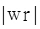
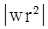
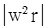
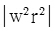
(정답률: 46%)
44. 에크만층(Ekman layer)에 관한 내용으로 틀린 것은?
- 에디크기는 높이에 따라 증가한다.
- 플럭스가 높이방향으로 변화하고 풍향도 변화한다.
- 기압경도력, 전향력과 마찰력이 거의 균형을 이루고 있다.
- 북반구에서는 높이에 따라 바람의 방향이 시계방향으로 회전한다.
(정답률: 55%)
45. 일반적으로 알려진 이론과 관측을 토대로 한 중위도 종관규모에서의 주된 에너지 흐름은?
- 평균위치에너지 → 에디위치에너지 → 에디운동에너지 → 평균운동에너지
- 평균위치에너지 → 평균운동에너지 → 에디위치에너지 → 에디운동에너지
- 평균위치에너지 → 에디위치에너지 → 평균운동에너지 → 에디운동에너지
- 평균위치에너지 → 에디운동에너지 → 에디위치에너지 → 평균운동에너지
(정답률: 62%)
46. 모든 등온선이 동서 방향으로 나란히 서 있고 북에서 남으로 1000km 당 5℃씩 증가하는 온도분포가 있다. 어느 관측점에서 풍속 10m/s의 남풍이 일정하게 볼 때 온도이류는?
- -10 × 10-5 ℃/s
- 0 ℃/s
- 5 × 10-5 ℃/s
- 15 × 10-5 ℃/s
(정답률: 60%)
47. 어떤 공기기둥이 북반구에서 온위를 보존하면서 이동한다. 이동 중 등온위면 사이의 두께가 증가하게 될 때 발생하는 변화에 대한 설명으로 틀린 것은?
- 상대와도 증가하게 된다.
- 절대와도 증가하게 된다.
- 질량보존을 위하여 공기기둥의 단면적이 감소하게 된다.
- 반시계방향의 흐름은 강화되고, 시계방향의 흐름은 약화된다.
(정답률: 48%)
48. 그림과 같이 북반구 상층 일기도에서 바람이 좁은 등고선 간격의 영역으로부터 넓은 등고선 간격의 영역으로 볼 때, 바람 변화의 설명이 옳은 것은?
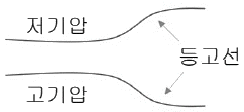
- 풍속이 강해지면서 고기압쪽으로 본다.
- 풍속이 강해지면서 저기압쪽으로 본다.
- 풍속이 약해지면서 고기압쪽으로 본다.
- 풍속이 약해지면서 저기압쪽으로 본다.
(정답률: 48%)
49. 절대와도(absolute vorticity)란?
- 상대와도 + 중력가속도
- 상대와도 + 코리올리 인자
- 상대와도 – 코리올리 인자
- 상대와도 + 중력가속도 – 코리올리 인자
(정답률: 73%)
50. 1000 ~ 700 hPa 층의 두께(thickness)가 한 곳에서는 2.8km 이고, 이 곳에서 동쪽으로 500km 떨어진 곳의 두께는 3.0km 이다. 온도풍(m/s)은 어느 정도인가? (단, 남북으로 두께 경도(thickness gradient)가 없으며, 코리올리 파라미터는 f=10-4s-1, 중력가속도는 10m/s2 이다.)
- 10
- 20
- 30
- 40
(정답률: 24%)
51. 강물의 속도는 지면에 대하여 동쪽으로 5m/s 로 흐르고 있으며, 이 강물 위를 배가 동쪽으로 15m/s 로 움직이고 있다. 이때 기압은 동쪽으로 가수록 0.5 kPa/200km 만큼 증가한다. 그런데 이 강의 한 가운데에 있는 섬에서의 기압 변화량은 0.5 kPa/6hr이었다. 그러면, 이 섬 주위를 통과하는 배위에서의 6시간당 기압 변화량은 약 얼마인가?
- 1.6 kPa
- 2.1 kPa
- 2.6 kPa
- 3.1 kPa
(정답률: 35%)
52. 중위도 저기압의 발생 기작(mechanism)은?
- 잠열 방출
- 경압 불안정
- 대류 불안정
- 임계 고도 불안정
(정답률: 50%)
53. 어느 한 지점의 850 hPa 면에서 남풍이 5m/s로 관측되고 700hPa면에서 남서풍이 7m/s로 관측되었다면 온도풍의 풍향은?
- 동풍
- 서풍
- 남풍
- 북풍
(정답률: 55%)
54. 토네이도의 회전 중심에서의 300m 떨어져 있는 곳의 접선 방향의 속도를 30m/s라 한다면 이 운동과 관련된 로스비 수는? (단, 코리오리 인자 f=10-4s-1로 가정한다.)
- 30
- 102
- 103
- 3×104
(정답률: 59%)
55. 서진운동(westward propagation)만을 하는 대기파동은?
- 음파
- 중력파
- 로스비파
- 관성중력파
(정답률: 66%)
56. 각운동량이 중위도에 극 쪽으로 운송되는 방법은?
- 남북 기압경도력에 의해서
- Hadley 순환의 상층수편운동에 의해서
- 편서풍대의 수평적 에디(eddy)운동에 의해서
- 편동풍대의 수평적 에디(eddy)운동에 의해서
(정답률: 55%)
57. 등압면 일기도에서 위도 30°에서 지균풍이 20m/s인 경우 등압면의 기울기는? (단, 중력가속도는 10m/s2로 가정한다.)
- 약 1.5/1,000
- 약 1.5/ 10,000
- 약 3.0/1,000
- 약 3.0/10,000
(정답률: 48%)
58. 다음 중 기압좌표계로 표현된 기압경도력은? (단, ρ는 밀도, P는 기압,
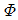
는 geopotential)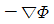
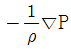
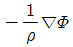
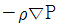
(정답률: 54%)
59. 축대칭 소용돌이 운동에서 원주속도가 re-r/10과 같이 주어졌을 때, 최대 풍속 지점과 그곳에서의 최대 속도는? (단, r은 원주의 반경이다.)
- 최대 풍속 지점 : r = 10, 최대속도 : 10 / e
- 최대 풍속 지점 : r = 20, 최대속도 : 10 / e
- 최대 풍속 지점 : r = 10, 최대속도 : 20 / e
- 최대 풍속 지점 : r = 20, 최대속도 : 20 / e
(정답률: 59%)
60. 태풍의 풍속구조는 경도풍(gradient wind)으로 근사할 수 있다. 경도풍은 힘의 균형에 따라 여러 유형으로 분류할 수 있는데, 다음 중 태풍의 가장 적합한 힘의 균형은?
- 기압경도력 = 원심력 + 전향력
- 원심력 = 기압경도력 + 전향력
- 전향력(기압경도력 ＞ 원심력) = 기압경도력 + 원심력
- 전향력(기압경도력 ＜ 원심력) = 기압경도력 + 원심력
(정답률: 56%)
4과목: 기후학
61. 도시화(urbanization)에 의하여 그 양이 증가하고 있는 기후요소로 적합하지 않은 것은?
- 구름
- 기온
- 강수량
- 일사량
(정답률: 71%)
62. 우리나라 기온의 평균 연교차는 연평균 일교차의 대랙 몇 배 정도 되는가?
- 1배
- 3배
- 6배
- 9배
(정답률: 65%)
63. 해면기압의 전 지구 분포에 관한 설명으로 옳은 것은?
- 아열대 고기압대의 형성은 주로 열적인 원인이다.
- 북태평양의 알류산 저기압은 여름철에 크게 발달한다.
- 북반구 아열대 고기압은 겨울철보다 여름철에 강화된다.
- 적도지방에는 기온이 높아 별로 발달되지 않은 고기압대가 있다.
(정답률: 47%)
64. 다음에서 설명하는 기후는?
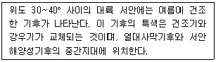
- 서안기후
- 스텝기후
- 지중해성기후
- 아열대 하계건조기후
(정답률: 63%)
65. 우리나라에서 일반적으로 기압의 배치가 서고동저형을 나타내는 계절은?
- 봄
- 여름
- 가을
- 겨울
(정답률: 63%)
66. 다음 중 기후 변화와 원인이 가장 관계가 적은 것은?
- 화산활동
- 대륙의 이동
- 지자가의 변화
- 태양활동의 변화
(정답률: 42%)
67. 쾨펜(köppen)의 무엇을 기준으로 열대기후, 온대기후, 냉대기후를 구분하였는가?
- 연 최저기온
- 연 평균기온
- 최난월(最蘭月)의 평균기온
- 최한월(最寒月)의 평균기온
(정답률: 55%)
68. cP 기단의 특성을 나타내는 것은?
- 한랭건조하다.
- 근원지는 태평양이다.
- 불안정하고 키가 작다.
- 우리나라에서는 겨울보다 여름에 빈번하다.
(정답률: 79%)
69. 다음 중 기후요소만으로 연결된 것은?
- 기온 – 바람 - 기단
- 기온 – 바람 - 강수
- 위도 – 고도 - 전선
- 위도 – 고도 – 수륙분포
(정답률: 69%)
70. 다음 중 기단이 생성되기 위한 조건으로 가장 적절한 것은?
- 넓고 평평한 고원지대
- 공기의 이동속도가 빠른 지역
- 국지적인 가열이 자주 발생하는 지역
- 부분분적으로 공기의 상승·하강 운동이 활발한 지역
(정답률: 62%)
71. 몬순의 영향을 받는 한반도의 여름과 겨울의 기후특성으로 틀린 것은?
- 여름철 몬순의 대표적인 현상은 장마이다.
- 여름에 일 년 강수량의 절반 이상이 내린다.
- 겨울에는 북풍 계열의 바람이 불어 한파가 발생한다.
- 겨울에는 시베리아 기단으로 인해 정체전선의 영향을 주로 받는다.
(정답률: 64%)
72. 다음 중 과거의 기후를 추정하는데 있어 가장 관계가 적은 것은?
- 화석
- 단층(fault)
- 고토양(palaesol)
- 호상점토(varves)
(정답률: 58%)
73. 캐나다와 알래스카의 태평양 연안에서 나타나는 기후와 같은 종류의 기후가 나타나지 않는 곳은?
- 뉴질랜드
- 칠레의 남부
- 영국 및 스칸디나비아반도
- 아프리카 동쪽 마다가스카르섬
(정답률: 55%)
74. 엘니뇨 현상에 관한 설명으로 틀린 것은?
- PNA 패턴이 교란된다.
- 상대적인 현상으로 라니냐를 들 수 있다.
- 대기-해양의 상호작용에 의해 발생한다.
- 인도네시아 등 서태평양에 위치한 곳이 극심한 홍수를 겪는다.
(정답률: 73%)
75. 클라이모 그래프에 대한 설명으로 틀린 것은?
- 체감기후를 표시하기 위한 그래프
- 기온과 상대습도와의 관계를 나타내는 그래프
- 기온과 강수량을 이용하여 한 지역의 기후 특성을 일목요연하게 보여주는 그래프
- 그래프의 위치에 따라 고온다습, 고온건조, 저온다습, 저온건조를 쉽게 알 수 있음
(정답률: 58%)
76. 적도지방과 극지방의 에너지 불균형을 해소하기 위한 지구의 자오 순환은 3개의 세포로 구성되어 있다. 단일세포로 구성되지 않고 3개의 세포로 구성되는 가장 큰 요인은 무엇인가?
- 지구의 자전
- 지표부근의 마찰력
- 대륙과 해양의 비열차이
- 태양복사의 불균형으로 인한 온도차이
(정답률: 57%)
77. 다음 중 알베도(albedo)가 가장 작은 지역은?
- 사막
- 삼림
- 초지
- 신적설
(정답률: 61%)
78. 푄(Fohn)풍과 같은 종류의 바람인 것은?
- 보라(Bora)
- 노서(Norther)
- 치누크(Chinook)
- 미스트랄(Mistral)
(정답률: 72%)
79. 다음 중 지구의 평균온도를 289K 라 할 때 지구에서 방출되는 장파복사 에너지 강도가 최대가 되는 파장은 대략 얼마인가? (단, 지구를 흑체로 가정한다.)
- 0.5 μm
- 1 μm
- 5 μm
- 10 μm
(정답률: 54%)
80. 하이퍼그래프는 어느 요소를 이용한 것인가?
- 강수량과 기온
- 운량과 강수량
- 기온과 안개일수
- 안개일수와 뇌전일수
(정답률: 71%)
5과목: 일기분석 및 예보론
81. 대기의 운동을 단열과정으로 취급할 수 있는 요인으로서 적절한 것은?
- 공기는 열전도도가 작기 때문
- 상대습도가 일변화를 하기 때문
- 대기 중의 수증기 함유량이 많기 때문
- 대기가 지면복사를 잘 흡수하기 때문
(정답률: 70%)
82. 어떤 관측소에서 보내온 기상전문 중 강수량에 대한 전문 6RRRtR을 보니 69942로 되어 있었다면 이 전문의 해석으로 옳은 것은?
- 6시간 동안의 강수량이 2mm 이다.
- 6시간 동안의 강수량이 4.2mm 이다.
- 12시간 동안의 강수량이 0.4mm 이다.
- 12시간 동안의 강수량이 99.4mm 이다.
(정답률: 60%)
83. 비지균풍(Ageostrophic wind)은?
- 경도풍이다.
- 가상의 바람이다.
- 실제 관측풍이다.
- 지균풍과 실제풍과의 차이다.
(정답률: 49%)
84. 미지의 물리량을 기지의 물리량의 함수로서 수식화(數式化)하는 것은?
- 모수화
- 초기화
- 객관분석
- 지균풍조사
(정답률: 79%)
85. 다음 중 온난전선에서 비교적 잘 나타나지 않는 현상은?
- 뇌전
- 고층운
- 이슬비
- 전선무
(정답률: 72%)
86. 상층이기도의 기압골이 지상일기도의 저기압 중심의 위치보다 앞서 이동할 때, 다음 중 예상할 수 있는 지상기압계의 변화는?
- 지상저기압의 발달
- 지상저기압의 서진
- 지상저기압의 쇠약
- 지상저기압은 변화 없음
(정답률: 57%)
87. 다음은 제트기류를 분석한 것이다. 화살표는 제트기류이며, 점선은 등풍속선을 나타낸다. 이러한 제트기류가 형성되었을 때의 설명으로 옳은 것은?
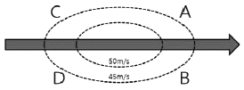
- A와 B지역은 제트기류의 입구에 해당된다.
- A지역에서는 지상고기압이 발달할 가능성이 높다.
- D지역에서는 지상저기압이 발달할 가능성이 높다.
- C와 D지역에서 일어나는 2차 순환은 간접순환이다.
(정답률: 60%)
88. 다음 중 두 개의 등압면 사이의 수직거리를 나타내는 층후(層厚)와 가장 관련이 깊은 것은?
- 장파의 파수
- 200 hPa 기온
- 700 hPa의 포차
- 기층의 평균기온
(정답률: 75%)
89. 다음 중 온난전선이 접근할 때 나타나는 구름의 순서로 가장 올바른 것은?
- Cc → St → Cu
- Ci → Ac → Sc
- Cs → As → Ns
- Ns → As → Cs
(정답률: 57%)
90. 수증기가 구름입자로 응결할 때 흡습성 입자나 핵 위에서 일어난다. 이때의 흡습성 있는 핵을 무엇이라 하는가?
- 결빙핵
- 빙정핵
- 응결핵
- 포착핵
(정답률: 72%)
91. 현재일기(ww)의 숫자부호 30~35는 무엇을 나타내는가?
- 뇌우
- 안개
- 이슬비
- 먼지보라
(정답률: 55%)
92. 동일지점의 같은 기상상태에서 상층 일기도 고도면의 구배가 2배로 증가했다면 지균풍속은 몇 배가 되겠는가?
- 1/2 배
- 1 배
- 2 배
- 4 배
(정답률: 41%)
93. 지상일기도에서 동서로 뻗는 전선은?
- 정체전선
- 폐색전선
- 온난전선
- 한랭전선
(정답률: 74%)
94. 일반적으로 태풍의 이동속도가 빨라지는 지방은?
- 열대지방
- 온대지방
- 적도부근
- 아열대지방
(정답률: 49%)
95. 다음은 어떤 불안정 지수에 대한 설명인가?
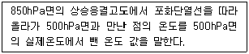
- K-index
- Lifted Stability Index (LSI)
- Martin Stability Index (MSI)
- Showalter Stability Index (SSI)
(정답률: 69%)
96. 300hPa면의 고도는 700hPa면 고도의 약 몇 배인가?
- 2배
- 3배
- 4배
- 5배
(정답률: 69%)
97. 저기압 전면에는 대류권의 상층까지 도달하는 느린 상승운동이 있다. 이 운동과 무관한 구름은?
- 적운
- 고층운
- 권층운
- 난층운
(정답률: 42%)
98. 단열선도에서 어떤 기압면의 상승응결고도로부터 습윤단열선을 따라서 원래의 기압면까지 하강시켰을 때의 온도는?
- 상당 온도
- 습구 온위
- 습구 온도
- 위상당 온위
(정답률: 46%)
99. 중위도 지방에서 코리올리 인자(Coriolis factor)의 대략적인 값은?
- 10-2sec-1
- 10-4sec-1
- 10-6sec-1
- 10-8sec-1
(정답률: 58%)
100. 중위도 지방의 종관규모 기압계에서 일반적으로 지균풍속과 경도풍속의 차이는 어느 정도를 초과하지 않는가?
- 0 ~ 5%
- 5 ~ 10%
- 10 ~ 20%
- 20 ~ 30%
(정답률: 53%)